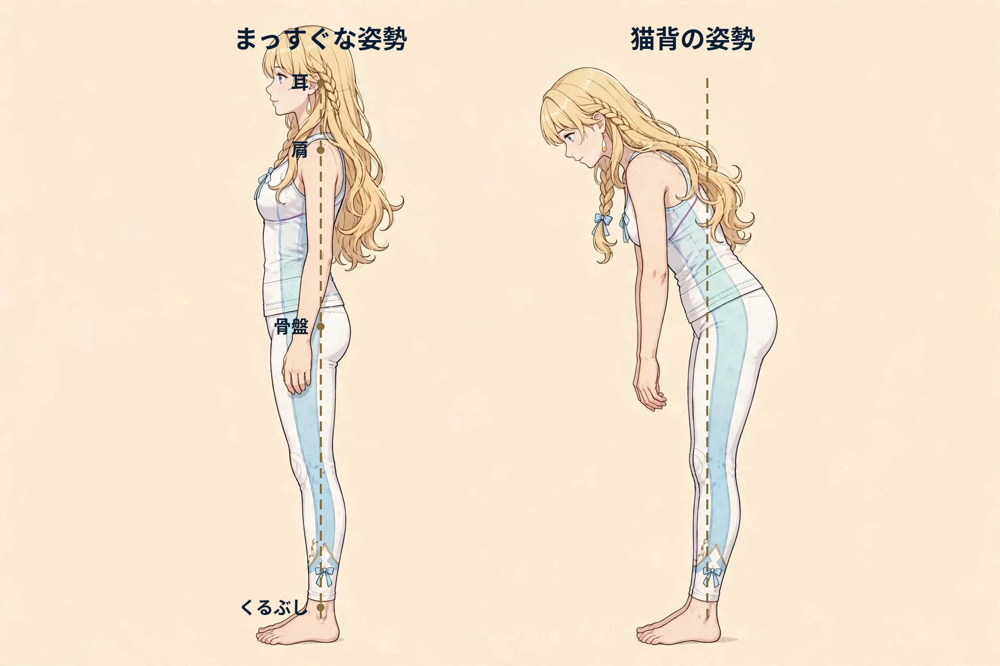

難波で気になる巻き肩｜要因の整理とセルフケア、受診の目安

１．巻き肩とは
「鏡に横向きに映ると、肩が耳より前に出ているように見える」「写真を見返すと、肩が内側に巻き込むように収まっていて、背中も丸く見える」「腕を体の横に下ろすと、手の甲が前を向きやすい気がする」——巻き肩は、姿勢が気になり始めたときに目にしやすいお悩みの一つです。ここでいう巻き肩は、肩の位置が体の中心より前寄り・内側寄りに収まったように見える状態を表す日常的な言い方で、医学的な診断名ではありません。背中全体が丸まる「猫背」と一緒に語られることが多いものの、猫背が背中の丸みに焦点を当てた言葉であるのに対し、巻き肩は肩そのものの位置に焦点を当てた言い方として使われます。肩が前に出た姿勢では、胸の前側が縮こまったような感じや、肩甲骨まわりの広がり、首・肩の重さをあわせて感じる方もいます。ただし、見た目や感じ方だけで、その背景を特定することはできません。この記事では、巻き肩の一般的な解説、考えられる要因の例、日常で取り入れやすいセルフケア、そして先に医療機関へ相談したい目安を整理します。あくまで一般的な情報としてお読みください。
２．考えられる要因の整理
巻き肩が気になるときの背景には、次のような生活習慣や体の使い方が関係している場合があります。
- デスクワークなど前かがみの姿勢の積み重ね：パソコンの画面や書類に向かう時間が長いと、腕が体の前で作業する姿勢が続き、胸の前側の筋肉が縮こまった状態に慣れやすいと言われます。反対に、肩甲骨を寄せる側の筋肉を使う機会は少なくなりがちです。
- スマートフォンやタブレットを見る姿勢：画面をのぞき込むように頭が前に出て、肩も一緒に前へ寄る姿勢が続くと、その姿勢のまま過ごす時間が長くなりやすい方もいます。
- 座り方のくせ：椅子に浅く腰かけて背もたれに寄りかかる、肘置きに体重を預けて肩がすくむといった座り方が習慣になっていると、肩の位置にも影響しやすい場合があります。
- 荷物の持ち方・抱え方：荷物を体の前で抱える、片側の肩にバッグをかけ続けるといった持ち方が続くと、肩まわりの使い方に偏りが出やすいと言われます。難波のように駅や商業施設が集まるエリアでは、買い物の荷物を持つ時間が長くなる日もあります。
- 体を動かす機会の少なさ：腕を大きく動かしたり、胸を開いたりする動きが少ない日が続くと、肩まわりの動かしにくさを感じる方もいます。
- 疲労や冷え：忙しい日が続いて疲れがたまっているときや、冷房の効いた室内で肩まわりが冷えているときは、普段より姿勢の崩れや肩の重さを意識することもあります。
これらは一例であり、当てはまる要因があっても、それがご自身の巻き肩の背景であると決めつけることはできません。
３．日常で取り入れられるセルフケア
どれも特別な道具はいりません。仕事の合間や帰宅後の時間に、無理のない範囲で続けやすいものから取り入れてみてください。痛みが強まる動かし方は避け、中止してください。首・肩まわりの筋肉（図1）と、背面の指標（図2）も参考にしてください。
- こまめに姿勢を変える：1時間に一度は立ち上がって歩く、席を立つついでに腕を下ろして力を抜くなど、同じ姿勢を続けない工夫を心がけます。
- 胸の前をゆっくり開く：両手を体の後ろで軽く組み、呼吸をしながら胸の前を気持ちのよい範囲で開く方もいます。肩や腕に痛みが出るほど強く引くことは避けてください。
- 肩甲骨を小さく寄せる：背筋を無理に反らさず、両側の肩甲骨をそっと背中の中心へ寄せる動きを、呼吸に合わせて数回繰り返す方もいます。
- 肩をすくめてストンと下ろす：両肩を耳に近づけるようにすくめてから、息を吐きながら力を抜いて下ろす動きで、肩まわりの力を抜くきっかけにする方もいます。
- 深呼吸で胸を開く：鼻からゆっくり息を吸って胸の広がりを感じ、口から細く吐く呼吸を数回繰り返し、合間に肩の力を抜く時間をつくる方もいます。
- 作業環境を見直す：画面の高さや椅子との距離、キーボードの位置などを調整し、肩が前に寄りにくい配置を意識する方もいます。
- 温める：帰宅後の入浴で肩まわりまで湯船につかるほか、冷房の効いた室内では上着などで肩や背中を冷やさない工夫をする方もいます。


４．受診の目安
次のような場合は、セルフケアやサロンでのケアより先に、医療機関への相談をご検討ください。
- 肩や腕に強い痛みがあり、動かしにくい、または痛みが日に日に強くなっている
- 腕や手にしびれがある、または力が入りにくい感じがある
- 腕が上がらない、肩を動かすと痛みが走る
- 転倒・打撲などのケガのあとに、肩の痛みや動かしにくさが出た
- 肩や首まわりに腫れや熱っぽさ、発熱を伴う
- 安静にしていても痛みが気になり、数週間以上続いている
これらは一例です。肩の痛みや動かしにくさの背景には、関節や腱、神経の不調など、早めの対応が必要な体の不調が関係する場合もあります。当てはまる場合や、少しでも気になる症状がある場合は、自己判断せず整形外科など医療機関にご相談ください。
５．当店でのケアとサロンのご案内
ステラシリウス（難波）は、月〜土 17:00〜22:00（日曜休み）に営業する女性専用サロンです。カウンセリングで当日のお悩みをうかがい、肩や胸まわり、肩甲骨まわりを含めた体の状態を見ながら、オイルマッサージと美容整体を組み合わせた90分 10,000円（税込）のコースをご用意しています。完全個室で、シャワー完備のため、施術の前後に汗やオイルを流してからお帰りいただけます。お仕事帰りの夜の時間に、体をほぐしてゆったり過ごす休息の時間としてご利用ください。なお、ステラシリウスは近日開院予定のため、ご予約の受付はまだ開始していません。また、当サロンはリラクゼーションを目的としたサロンで、医療行為は行いません。巻き肩に関する治療を行うものではありませんので、「受診の目安」に当てはまる場合は、まず医療機関へご相談ください。